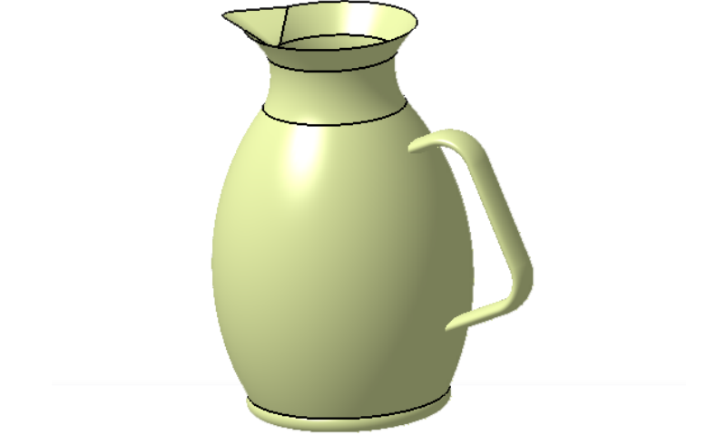

Mechanical Projects
About this page
On this page, I have compiled all the projects I've created using SolidWorks, CATIA V5, or AutoCAD. Here, you can explore each project along with accompanying images and additional details, providing insights into the design and construction processes behind each one.
Belt Roller With Catia V5
LA belt roller is a cylindrical component used in conveyor systems to support
and guide a conveyor belt. Conveyor systems are mechanical handling equipment
designed for the efficient transportation of goods or materials from one location
to another. The belt roller plays a key role in this process by providing support to
the conveyor belt and helping it move smoothly over the conveyor's length.
I ve made this based on this video.
And you can download the compressed file who contains all parts and the assembly from here.
Belt Roller in assembly
Bearing assembly With Catia V5
A ball bearing is a type of rolling-element bearing that uses balls to maintain separation
between the bearing races. These bearings reduce rotational friction and support radial and axial
loads. The balls inside the bearing enable smooth rotation by minimizing friction between the
moving parts. Ball bearings are commonly used in various applications, including machinery,
automotive components, and household appliances, to facilitate smooth and efficient motion.
I ve designed this based on this video.
And you can download the compressed file who contains all parts and the assembly from here.
Belt Roller in assembly
Gear Reducer Assembly and Simulation with Catia V5
A gear reducer, also known as a gear reduction unit or gearbox, is a mechanical device used to reduce the speed of an input shaft (such as a motor) and increase the torque output. It consists of a set of gears with different sizes that mesh together. By using gears with different numbers of teeth,
the rotational speed can be reduced while the torque is increased proportionally. Gear reducers are commonly used in machinery and industrial applications to match the speed and torque requirements of different components in a system.
I ve designed this based on this video.
and I ve made the simulation of the gear rotation with this video!
gear reducer
V-spout coffee kettle using Generative Shape Design with Catia V5
Crafted using a video!, I've developed a compelling project showcasing a V-spout coffee kettle, ideal for exploring generative shape design in CATIA. This project offers a wealth of tools within generative shape design, making it a valuable endeavor for learning and experimentation. 
coffee kettle
Drone for non destructive testing
This project involved using reverse engineering. I started by downloading the drone frame from GrabCAD. I then converted it to a CATIA format and used the software's drafting tools to measure each individual component. Finally, I used these measurements to design and build my own version of the drone, specifically intended for non-destructive testing applications.

Drone